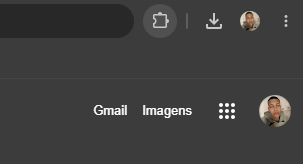
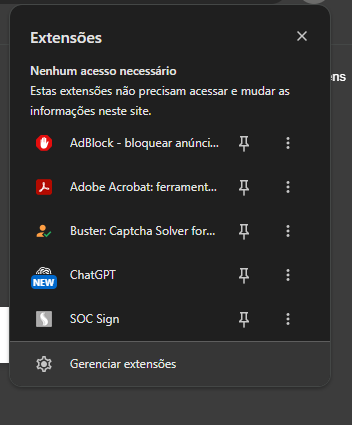
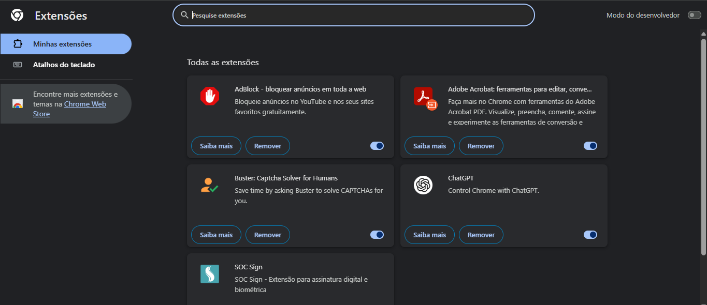
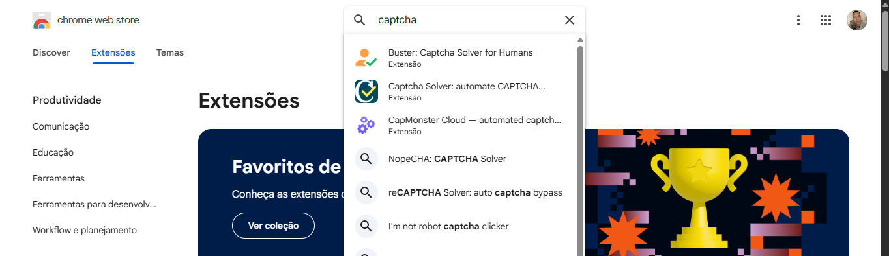
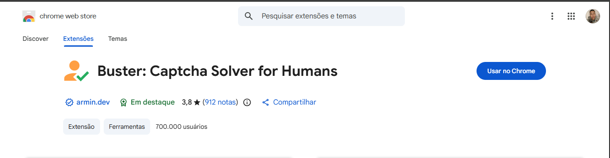
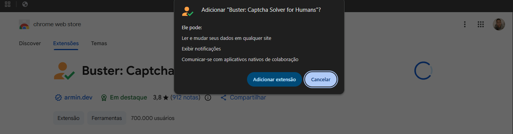
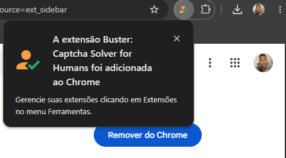

Prefira o Edge
É o navegador recomendado para evitar oscilações durante a validação.
Procedimento recomendado para reduzir falhas durante a validação de segurança e evitar perda de tempo.
O procedimento também pode funcionar no Google Chrome, porém esse navegador pode apresentar oscilações, bugs e instabilidades durante a validação.
Utilize a extensão aprovada somente em sistemas e sites autorizados pela clínica.
Este material orienta a instalação e o uso da extensão aprovada para auxiliar na validação, reduzir falhas e facilitar o processo quando um CAPTCHA aparecer.
Siga as sete etapas na ordem apresentada. Não é necessário alterar configurações avançadas do navegador.
É o navegador recomendado para evitar oscilações durante a validação.
Use as imagens e os marcadores para localizar cada opção com facilidade.
Realize o procedimento apenas nos sistemas e sites liberados pela clínica.
Acompanhe os marcadores em cada captura. Se precisar enxergar melhor, selecione “Ampliar imagem”.
Etapa 1 de 7
Clique no ícone de extensões localizado no canto superior direito do navegador.

Etapa 2 de 7
No menu aberto, clique em “Gerenciar extensões”.

Etapa 3 de 7
Na página de extensões, clique em “Encontre mais extensões e temas na Chrome Web Store”.

Etapa 4 de 7
Pesquise por “captcha” e clique no primeiro resultado: “Buster: Captcha Solver for Humans”.

Etapa 5 de 7
Na página da extensão, clique no botão “Usar no Chrome”.

Etapa 6 de 7
Na janela de confirmação, clique em “Adicionar extensão”.

Etapa 7 de 7
Quando essa mensagem aparecer, significa que a extensão foi instalada corretamente.

Depois que a instalação for confirmada, feche completamente o navegador e abra-o novamente. Isso garante que a extensão seja carregada corretamente.
Ao acessar o SOC ou outro sistema autorizado que apresente CAPTCHA, siga o tutorial em vídeo abaixo para aprender a utilizar a extensão.
Assista ao procedimento completo para utilizar a extensão quando o CAPTCHA aparecer no SOC ou em outro sistema autorizado.
Vídeo com o procedimento de uso da extensão quando o CAPTCHA aparecer.
Não foi possível carregar o vídeo. Confirme se o arquivo assets/videos/Tutorial.mp4 está na pasta do site.
Para maior estabilidade, assista e realize o procedimento no Microsoft Edge. O player também é compatível com o Google Chrome.
Comece pelas verificações simples abaixo. Se o problema continuar, procure o suporte interno.
Feche completamente o navegador e abra-o novamente. Depois, acesse o menu de extensões e confirme se a extensão está ativa. Se ela ainda não aparecer, procure o suporte interno.
Atualize a página do sistema, confirme que a extensão está ativa e verifique se o navegador está atualizado. Utilize preferencialmente o Microsoft Edge. Se o erro continuar, procure o suporte interno.
O Google Chrome pode apresentar oscilações e instabilidades. Feche e abra o navegador, confirme que ele está atualizado e tente novamente. Para maior estabilidade, realize o procedimento no Microsoft Edge.
Abra o menu de extensões pelo ícone de quebra-cabeça e fixe a extensão na barra do navegador. Se ela não estiver na lista, confirme se está ativa no gerenciamento de extensões.
Atualize a página e tente novamente em uma versão atualizada do Microsoft Edge. Se o problema continuar, confirme com o suporte interno se a pasta do tutorial está completa.
Este material é destinado exclusivamente ao uso interno. Utilize a extensão somente em sistemas e sites autorizados pela clínica. Não compartilhe credenciais, dados de pacientes ou informações internas. Em caso de dúvida, procure o responsável pelo sistema.
Imagem ampliada